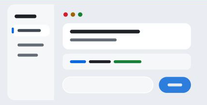

Open the gallery #
/claude-themes
Use Dark and Light to switch the visible cards. When you select a card, the plugin applies that palette and sets the Code tab to its mode. Each family has both variants. For example, GitHub Light uses a bright surface and a blue accent.


Find and save palettes #
- Search by theme name or by a term in its description, such as
pastels. - Select the star on a theme card. Favorites are saved by variant, so you can star both the dark and light looks of one family.
- Open Favorites to find the saved cards. Select the star again to remove a favorite.
Switch from the prompt #
| Input | Result |
|---|---|
/claude-themes github |
Picks the GitHub variant that matches the current palette’s mode. |
/claude-themes github light |
Picks the light GitHub variant regardless of the current mode. |
/claude-themes github-light |
Applies the exact ID github-light. |
/claude-themes catppuccin-mocha |
Applies Catppuccin Mocha by its ID. |
When a name matches an exact ID, the exact match wins unless you specify a mode. Use the spaced dark or light suffix when you want to select a family variant explicitly.
/claude-themes github light
If a theme changes when a new session starts, check Day and night, Follow system, and folder themes.